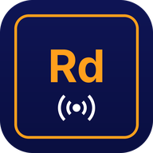

Per dare alle radio FM un link https fisso serve un piccolo server che riceve il segnale da NWLradio e lo distribuisce. Qui lo crei gratis su Oracle Cloud: una volta, in circa 20 minuti.
radio.Oracle blocca tutto il traffico in arrivo. Dalla pagina del server: Networking → clic sulla Subnet → Security (o Security Lists) → Default Security List → Add Ingress Rules:
| Source CIDR | 0.0.0.0/0 |
| IP Protocol | TCP |
| Destination Port Range | 80,443,8000 |
Salva con Add Ingress Rules. Il firewall interno del server lo apre lo script del passo 5.
Sul PC apri il Prompt dei comandi (tasto Windows, scrivi cmd, Invio) e scrivi, cambiando il nome del file della chiave e l'indirizzo IP:
ssh -i "%USERPROFILE%\Downloads\ssh-key-2026-11-26.key" ubuntu@IP-DEL-SERVER
Alla domanda Are you sure you want to continue connecting? scrivi yes. Se Windows risponde «UNPROTECTED PRIVATE KEY FILE», sistema i permessi della chiave e riprova:
icacls "%USERPROFILE%\Downloads\ssh-key-2026-11-26.key" /inheritance:r /grant:r "%USERNAME%:R"
Dentro il server incolla questo comando e premi Invio. Fa tutto da solo in 2-3 minuti: Icecast, il certificato https e il firewall.
curl -fsSL https://edicola.grandangoloregionale.it/suite/radio/nwlradio-server.sh | sudo bash
Alla fine compare un riquadro SERVER PRONTO con tutti i dati. Se li perdi, li rivedi con sudo cat /root/nwlradio-server.txt.
radio che punta all'IP del server, poi lancia lo script così:
curl -fsSL https://edicola.grandangoloregionale.it/suite/radio/nwlradio-server.sh | sudo bash -s radio.grandangoloregionale.itIl link per le radio diventa
https://radio.grandangoloregionale.it/live. Senza dominio lo script usa un nome automatico del tipo https://158-101-12-34.sslip.io/live.8000, punto di montaggio /live, utente source, password, link per le radio.Il link https://…/live è un flusso MP3 standard: le radio FM lo inseriscono nel loro software di messa in onda come ingresso «stream», «relay» o «web radio», all'orario del tuo programma. Puoi provarlo tu stesso aprendolo nel browser o in VLC mentre sei in onda.
https://…/admin/ mostra quanti ascoltatori, o radio, sono collegati.| «server non raggiungibile» | Controlla di aver aperto le porte al passo 3 e che l'indirizzo sia giusto. |
| «password o utente non accettati» | Ricopia la password da sudo cat /root/nwlradio-server.txt. L'utente è source. |
| Il link https non si apre | Il certificato si crea nei primi minuti. Controlla che le porte 80 e 443 siano aperte, poi aspetta 5 minuti. |
| Voglio rifare tutto | Rilancia il comando del passo 5: tiene la stessa password. |
NWLradio · Newland Studio Suite · torna alla suite